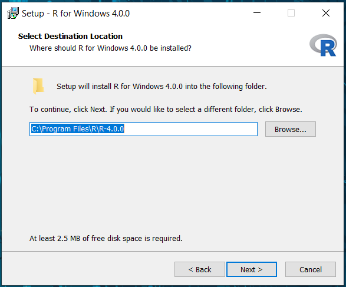
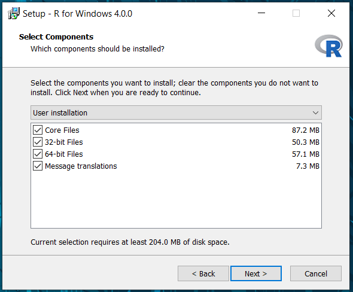
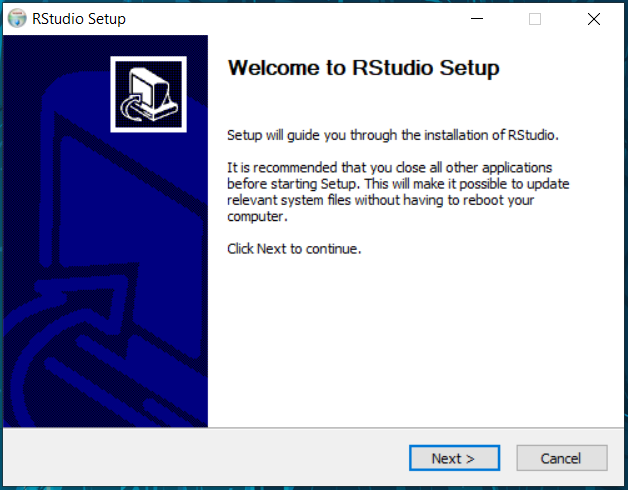
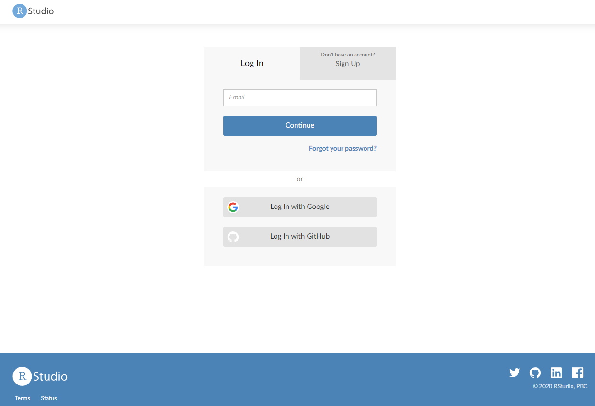
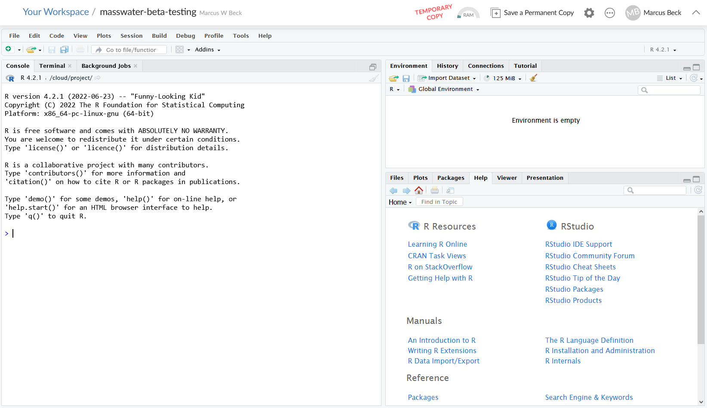

Setup R and RStudio
Thanks for your interest in the MassWateR R package. For the package beta testing, we will be using RStudio as our interface to R. In order to participate in this testing, you will need to make sure you have R and RStudio installed on your computer.
Thanks to the USGS-R Training group and Data Carpentry for making their installation materials available. The following instructions come directly from their materials, with a few minor edits to help you get set up.
Install R and RStudio
R and RStudio are separate downloads and installations. R is the underlying statistical computing software. RStudio is a graphical integrated development environment (IDE) that makes using R much easier and more interactive. You need to install R before you install RStudio.
Windows: Download and install R
Go to CRAN and download the R installer for Windows. Make sure to choose the latest stable version (v4.2.1 as of September 2022).
Once the installer downloads, Right-click on it and select “Run as administrator”.
Type in your credentials and click yes (or if you don’t have administrator access have your IT rep install with Admin privileges).

You can click next through the standard dialogs and accept most defaults. But at the destination screen, please verify that it is installing it to C:\Program Files\R

At the “Select Components” screen, you can accept the default and install both 32-bit and 64-bit versions.

At this screen, uncheck ‘Create a desktop icon’ because non-admin users in Windows will be unable to delete it.

Windows: Download and install RStudio
Download RStudio from here.
After download, double-click the installer. It will ask for your administrator credentials to install (you might need to have your IT rep install again).
Accept all the default options for the RStudio install.

macOS: Download and install R
macOS: Download and install RStudio
- Go to the RStudio download page
- Under Installers select RStudio x.yy.zzz - Mac OS X 10.6+ (64-bit) (where x, y, and z represent version numbers)
- Double click the file to install RStudio
Check Install
Open RStudio
Once installed, RStudio should be accessible from the start menu. Start up RStudio. Once running it should look something like this:

RStudio Cloud
If you can’t install R or RStudio prior to beta testing, you can use use RStudio in the cloud. This is only a backup option and we strongly encourage you to troubleshoot the installation when able.
To use RStudio Cloud, copy this link and paste it in a web browser: https://rstudio.cloud/project/4426781
If you do not have an RStudio Cloud account, you will see this screen when you first visit the URL:

You can setup an account for free using a login you create or through a third-party (Google or GitHub).
After your account is setup, you should a screen that looks something like this:

You’ll see that this is a TEMPORARY COPY under your account. Make it permanent by clicking the button on top. This will save any changes you make to this project under your account.
This project includes an installation of MassWateR and a copy of the code used in the introduction on this site.